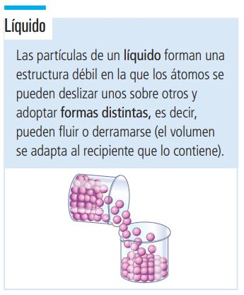

Los líquidos como el agua o el mercurio, se caracterizan porque sus partículas se atraen con mayor fuerza que la que se establece entre los gases, lo que impide que se muevan libremente. Adoptan la forma del recipiente que los contiene, ya que sus partículas pueden deslizarse unas sobres otras. Conservan su volúmen y poseen densidades mayores que las de los gases y menores que las de los sólidos. Al igual que los sólidos son incompresibles.
Apoyo visual

Imagen tomada de: https://yoquieroaprobar.es/_pdf/07011.pdf
Propiedades de los líquidos
Fuerza de cohesión
Fuerza que mantiene unidas las partículas que los forman
Fuerza de adhesión
Propiedad que permite que dos superficies de sustancias iguales o diferentes se unen. Por ejemplo, las gotas de agua que adhieren a un vidrio.
Tensión Superficial
Propiedad en la que las moléculas que forman un líquido sufren atracciones desde todas las direcciones, pero las que están en la superficie son atraídas solamente hacia el interior.
Viscosidad
Medida de la resistencia que opone un líquido a fluir cuando se le aplica una fuerza. Disminuye al aumentar la temperatura mientras no existan cambios en su composición.
Capilaridad
Propiedad que tienen los líquidos de ascender de forma espontánea dentro de un tubo. Esto se debe a que las fuerzas de adhesión son más fuertes que las de cohesión.
Presión de vapor
Sucede cuando la evaporación de un líquido se produce en un recipiente cerrado, entonces las moléculas no pueden escapar y colisionan contra las paredes del recipiente o contra la superficie del mismo líquido.
Evaporación
Proceso por el cual las partículas de la superficie de un líquido tienden a escapar hacia la fase gaseosa debido a la energía cinética que poseen.